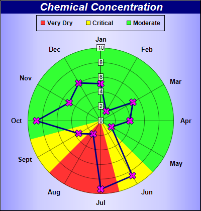

This example demonstrates adding sector zones to a polar chart.
In ChartDirector, a zone defined on the angular axis will mark an angular range, and so will appear as sectors on a polar chart.
This example contains three sector zones in the plot area background, colored as red, yellow and green. The green region is the original background of the plot area, while the red and yellow regions are added using
AngularAxis.addZone.
The following is the command line version of the code in "cppdemo/polarzones2". The MFC version of the code is in "mfcdemo/mfcdemo". The Qt Widgets version of the code is in "qtdemo/qtdemo". The QML/Qt Quick version of the code is in "qmldemo/qmldemo".
#include "chartdir.h"
int main(int argc, char *argv[])
{
// The data for the chart
double data[] = {5.1, 1.5, 5.1, 4.0, 1.7, 8.7, 9.4, 2.1, 3.5, 8.8, 5.0, 6.0};
const int data_size = (int)(sizeof(data)/sizeof(*data));
// The labels for the chart
const char* labels[] = {"Jan", "Feb", "Mar", "Apr", "May", "Jun", "Jul", "Aug", "Sept", "Oct",
"Nov", "Dec"};
const int labels_size = (int)(sizeof(labels)/sizeof(*labels));
// Create a PolarChart object of size 400 x 420 pixels. with a metallic blue (9999ff) background
// color and 1 pixel 3D border
PolarChart* c = new PolarChart(400, 420, Chart::metalColor(0x9999ff), 0x000000, 1);
// Add a title to the chart using 16pt Arial Bold Italic font. The title text is white
// (0xffffff) on deep blue (000080) background
c->addTitle("Chemical Concentration", "Arial Bold Italic", 16, 0xffffff)->setBackground(0x000080
);
// Set center of plot area at (200, 240) with radius 145 pixels. Set background color to green
// (0x33ff33)
c->setPlotArea(200, 240, 145, 0x33ff33);
// Set the labels to the angular axis
c->angularAxis()->setLabels(StringArray(labels, labels_size));
// Color the sector between label index = 5.5 to 7.5 as red (ff3333) zone
c->angularAxis()->addZone(5.5, 7.5, 0xff3333);
// Color the sector between label index = 4.5 to 5.5, and also between 7.5 to 8.5, as yellow
// (ff3333) zones
c->angularAxis()->addZone(4.5, 5.5, 0xffff00);
c->angularAxis()->addZone(7.5, 8.5, 0xffff00);
// Set the grid style to circular grid
c->setGridStyle(false);
// Use semi-transparent (40ffffff) label background so as not to block the data
c->radialAxis()->setLabelStyle()->setBackground(0x40ffffff, 0x40000000);
// Add a legend box at (200, 30) top center aligned, using 9pt Arial Bold font. with a black
// border.
LegendBox* legendBox = c->addLegend(200, 30, false, "Arial Bold", 9);
legendBox->setAlignment(Chart::TopCenter);
// Add legend keys to represent the red/yellow/green zones
legendBox->addKey("Very Dry", 0xff3333);
legendBox->addKey("Critical", 0xffff00);
legendBox->addKey("Moderate", 0x33ff33);
// Add a blue (0x80) line layer with line width set to 3 pixels and use purple (ff00ff) cross
// symbols for the data points
PolarLineLayer* layer = c->addLineLayer(DoubleArray(data, data_size), 0x000080);
layer->setLineWidth(3);
layer->setDataSymbol(Chart::Cross2Shape(), 15, 0xff00ff);
// Output the chart
c->makeChart("polarzones2.png");
//free up resources
delete c;
return 0;
}
© 2023 Advanced Software Engineering Limited. All rights reserved.